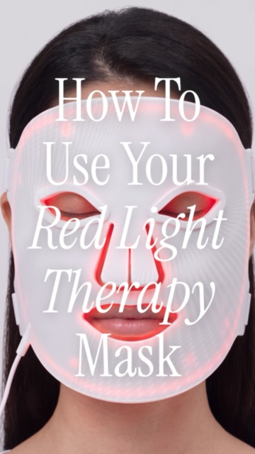
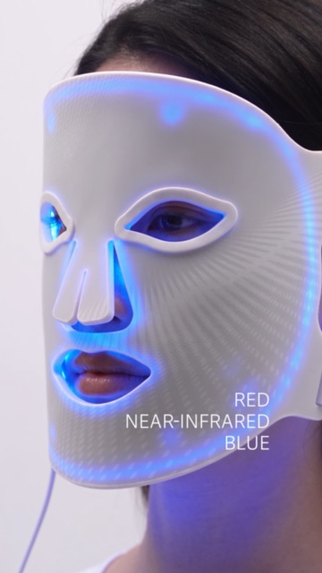

BrandedHow-to and feature videos2 videos
Red Light Mask, Product Education
Two vertical explainers for the SLF red light mask, on how to use it and on its light modes, plus product stills.

Play video: How To
Play video: Reasons to LoveOverview
- Brief and audience
- To confirm: Brief and intended audience
- Collaborators
- To confirm: Collaborators, or 'Solo'
- Type
- To confirm: Client project, concept project or personal project?
- Deliverables
- How To00:209:161080×1920
- Reasons to Love00:169:161080×1920
Creative approach
Soft beauty lighting and serif title cards walk through the routine (prep, set the timer, finish), then the red, near-infrared and blue light modes.
How it was made
To confirm: Where AI was used, and what you directed, edited or refined
Outcome
To confirm: Outcome or lessons learned